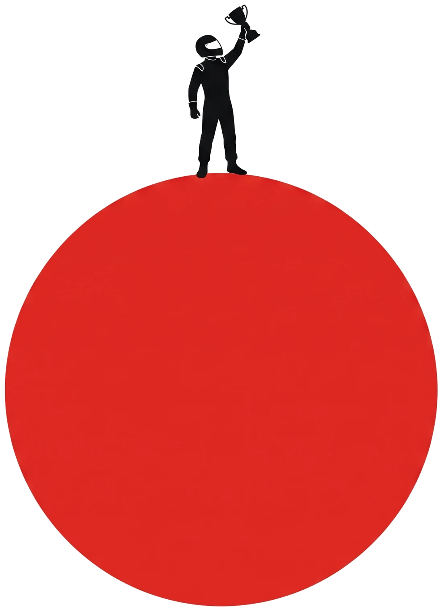
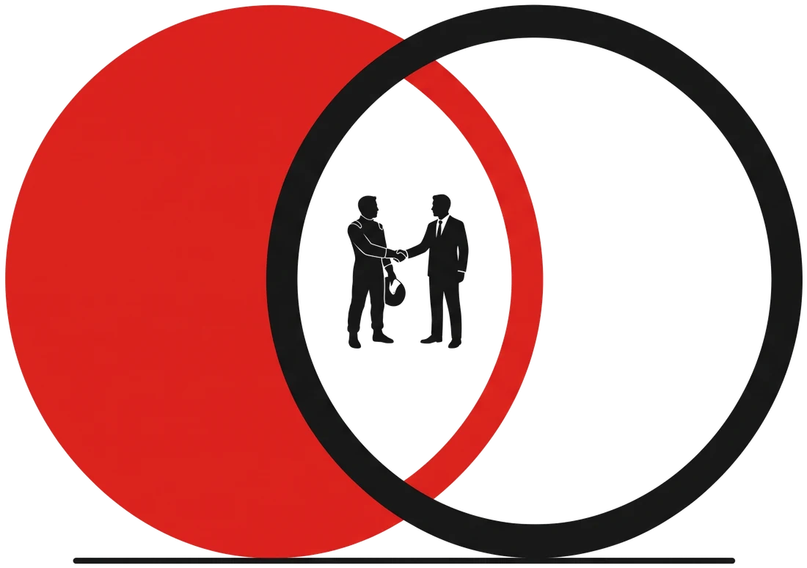
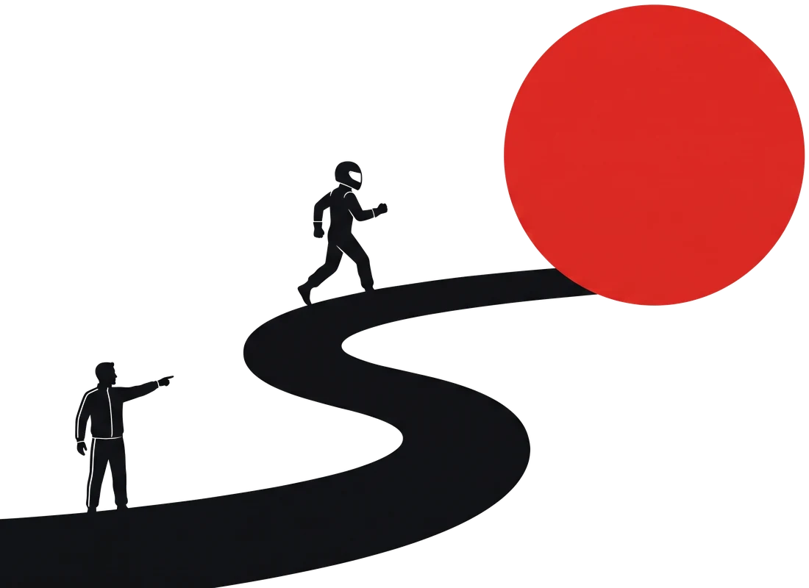

¿Qué perdería una marca si no existieras?
Para deportistas, equipos, organizadores de eventos y marcas. Tres pasos, casi todo con un toque. Al final recibes una lectura de tu proyecto: estado, ventajas, oportunidades, riesgos y lo que te recomendamos hacer. ¿Eres una marca? Descubre qué formato te conviene antes de invertir.

Muchas veces no sabemos qué está pasando
El problema casi nunca es el talento: es que no está traducido a algo que una marca pueda entender, activar y medir. Toca la frase que más te suena.
Casi nunca es falta de talento: la marca no encuentra qué comprar. Falta una oferta clara, con público y evidencia.
Lo medimos en: propuesta de valor, audiencia e inventario.La marca no vio lo que recibió. Sin informe de resultados, renovar depende de la buena voluntad.
Lo medimos en: evidencia e historial con marcas.Sin inventario ni datos de tu público, cualquier precio parece inventado, para ti y para la marca.
Lo medimos en: inventario, audiencia y operación comercial.Publicar no es comunicar: falta un plan que conecte tu calendario con lo que una marca puede activar.
Lo medimos en: contenido, calendario y alcance.Al auspicio le faltó activación y medición. El problema no fue el deporte, fue el formato.
Lo medimos en: objetivo, activación y medición (diagnóstico de marca).Lo que recibes al terminar
- Estado actualTu categoría y dónde está hoy tu proyecto.
- VentajasLo que ya tienes a favor frente a una marca.
- OportunidadesTu arquetipo, industrias compatibles y una idea de activación.
- RiesgosLos conflictos que hoy frenan tu proyecto.
- Oferta recomendadaQué hacer según tu situación, con valores de referencia.
Diagnóstico inicial
Una primera lectura con tus respuestas: dónde estás, qué te falta y qué te conviene hacer.
Auditoría ProMatch
Revisamos tu contenido y tu información real: Commercial Readiness Score, Evidence Confidence Score, integración de marcas y 13 capacidades comerciales. Cómo funciona »
¿Quién eres?
Del diagnóstico a un plan

1GratisDiagnóstico inicialRespondes aquí y recibes tu lectura en minutos. Nos la envías por WhatsApp si quieres seguir.

2A profundidad · USD 60 + IVAAuditoría ProMatchRevisamos tu contenido y tu información real con los indicadores de ProMatch. Precio de lanzamiento para los primeros 10 proyectos.

3AcciónOferta a tu medidaTe proponemos el servicio que corresponde a tu etapa. Nunca prometemos auspicios: construimos capacidad comercial.